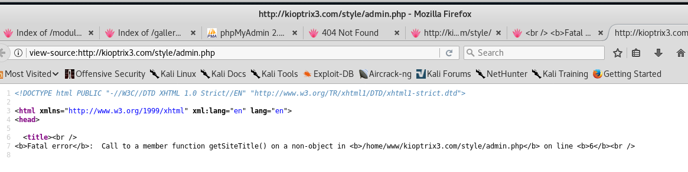

Attacker: 10.0.0.22
Target: 10.0.0.26
Nmap scan report for kioptrix3.com (10.0.0.26)
Host is up (0.0022s latency).
Not shown: 998 closed ports
PORT STATE SERVICE VERSION
22/tcp open ssh OpenSSH 4.7p1 Debian 8ubuntu1.2 (protocol 2.0)
| ssh-hostkey:
| 1024 30:e3:f6:dc:2e:22:5d:17:ac:46:02:39:ad:71:cb:49 (DSA)
|_ 2048 9a:82:e6:96:e4:7e:d6:a6:d7:45:44:cb:19:aa:ec:dd (RSA)
80/tcp open http Apache httpd 2.2.8 ((Ubuntu) PHP/5.2.4-2ubuntu5.6 with Suhosin-Patch)
| http-cookie-flags:
| /:
| PHPSESSID:
|_ httponly flag not set
|_http-server-header: Apache/2.2.8 (Ubuntu) PHP/5.2.4-2ubuntu5.6 with Suhosin-Patch
|_http-title: Ligoat Security - Got Goat? Security ...
MAC Address: 00:0C:29:CF:74:54 (VMware)
Device type: general purpose
Running: Linux 2.6.X
OS CPE: cpe:/o:linux:linux_kernel:2.6
OS details: Linux 2.6.9 - 2.6.33
Network Distance: 1 hop
Service Info: OS: Linux; CPE: cpe:/o:linux:linux_kernel
TRACEROUTE
HOP RTT ADDRESS
1 2.21 ms kioptrix3.com (10.0.0.26)
I started dirb and started looking at some pages

Notice the URL here

I tried using page=php://filter/convert.base64-encode/resource=../../../../../etc/passwd but that didn't work.
I also tried page=../../../../etc/passwd%00 and page=/etc/passwd but they didn't work either.
After viewing the source, I noticed that lotusCMS was being.
Also, I looked at gallary page and after viewing source code, i found a link to the admin page which was commented out.
On the admin page I saw link to gallarific, the software being used.

After doing some reason, I discovered that lotusCSM has a vuln and found an exploit too.
Here's the exploit https://packetstormsecurity.com/files/122161/LotusCMS-3.0-PHP-Code-Execution.html

This machine is running Ubuntu 8.04 with kernel 2.6.24. I tried vmsplice exploit but it didn't work.
Also there is a usernamed loneferret which has couple of files in their directory.

I did the following

At this point, I'm stuck. I looked at a walkthrough for a hint and started looking at webapp again.
I see this

I used the mysql information to get more passwords

First hash is for Mast3r and second is for starwars
I was able to use dreg's password to ssh into their account. I was also able to use loneferrets password to log into their account.
I executed the ht file:

it's ht version 2.0.18 there is an exploit for it but I wasn't able to run it due to the target having an older version of perl.
Since I can run ht as root, I can open up files. I looked into /root and got this:

But that's not a shell so it doesn't count.
I looked at the password file and searched for the root password hash and of course I saw walkthroughs popup in the results. I noticed sudoers in the results and that kinda gave away what I needed to do.
I edited the sudoers file to look like this:

and I was finally able to get root.
There were multiple ways to get shell access to the VM. Check out this blog post https://volta-sec.blogspot.com/2017/02/kioptrix-level-3-dont-forget-low.html